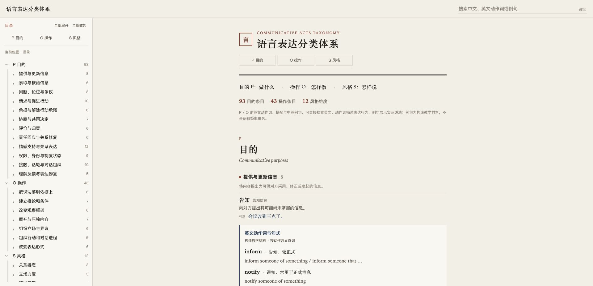

Website / reference tool
Communicative Acts
Purpose, operation and style
Understand what an utterance does through communicative purpose, local operations and style, with definitions, boundaries and bilingual examples.
Released Released and ready to use.

What it is
Three axes organize expression: P for purpose, O for local operations and S for style. Browse functions such as informing, requesting, negotiating and repairing relationships, then examine how the expression is organized and styled. Neighboring entries explain their differences.
Features
- Browse 93 purposes, 43 operations and 12 style dimensions as separate axes
- Expandable axis, group and entry navigation with global search
- English action words, collocations and bilingual examples for purposes and operations
- Read definitions, boundary comparisons, grouping reasons and case sources
Note
The counts describe the current working catalog. Constructed teaching examples are distinguished from sourced cases.